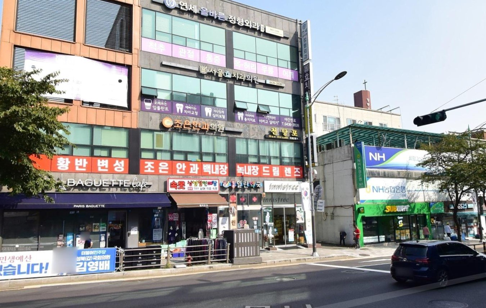
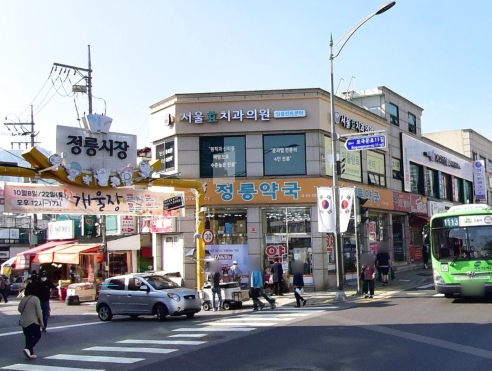

MAIN CLINIC · 본관
서울효치과 본관
서울 성북구 보국문로 40-3, 파리바게트 건물 3층
정기 휴진: 수요일 공휴일이 있는 주는 정기 휴진 없음
네이버 지도에서 확인 ↗
방문하시는 진료 공간을 확인하시고, 아래 진료시간과 주차 안내를 참고해 주세요.
사진을 통해 방문하실 건물을 확인해 주세요.

서울 성북구 보국문로 40-3, 파리바게트 건물 3층

차량으로 방문하시는 분은 서울효치과 공식 블로그의 주차 안내를 먼저 확인해 주세요. 주차 위치와 이용 방법은 블로그 원문을 기준으로 안내합니다.
주차 안내 자세히 보기 ↗